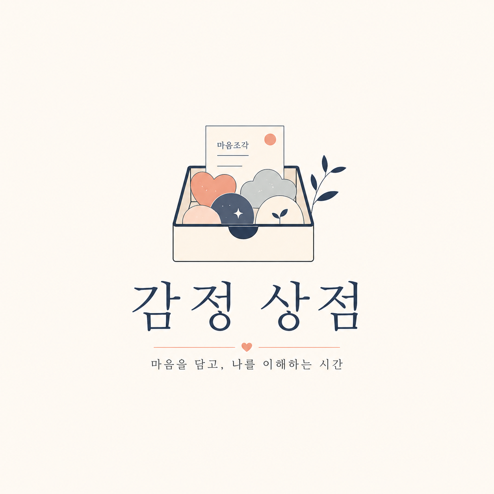

엄마가 생각보다 작아 보였다.
Invitation open
“엄마가 생각보다 작아 보였다.”
이런 감정도
조심히 진열할 수 있다면.
감정 상점은 오늘 느낀 감정을 한 문장으로 남기고, 누군가의 감정을 마음조각으로 조심히 열어보는 공간입니다.
아직 정식 오픈 전입니다. 첫 손님을 위한 초대장을 먼저 보내드릴게요.
Emotion card
오늘 입고된 감정
감정은 거창한 사연이 아니라, 마음이 움직인 한 장면에서 시작됩니다.
답장이 오기 전까지 자꾸 화면을 봤다.
완전히 괜찮진 않았지만, 내일은 나갈 수 있을 것 같았다.
How it works
감정 상점이 하는 일
오늘의 감정을 한 문장으로 남깁니다
설명하기 어려운 마음도 한 장면이면 충분합니다. 오늘 마음이 멈춘 순간을 짧게 남겨요.
감정은 조용한 진열대에 놓입니다
실명도, 댓글도 없이 감정만 남습니다. 감정은 평가받기보다 조심히 놓입니다.
누군가의 감정을 열어봅니다
마음조각으로 다른 손님의 감정을 열어봅니다. 읽고, 조용히 공감하고, 마음에 남으면 보관합니다.
마음에 남은 감정은 보관됩니다
크게 말하지 않아도 닿은 마음은 남습니다. 감정 상점은 그런 작은 공감의 기록을 모읍니다.
Receipt
감정을 팔면 영수증이 남습니다
판매한 감정, 받은 마음조각, 누군가가 보관했다는 기록이 감정 영수증으로 남아요.
감정 영수증
- 판매한 감정
- 사랑에 가까운 슬픔
- 가격
- 12 마음조각
- 한 문장
- 엄마가 생각보다 작아 보였다.
- 상태
- 누군가가 조용히 보관했습니다.
나 오늘 이 감정 팔았다.
maeum storeSafety rules
감정은 평가받지 않아야 하니까요
감정 상점은 댓글창을 열지 않습니다. 누군가의 감정은 평가받는 것이 아니라 조심히 열람되어야 하니까요.
- 댓글을 열지 않습니다.
- 실명을 요구하지 않습니다.
- 감정을 평가하지 않습니다.
- 현금 보상을 약속하지 않습니다.
- 조용한 공감만 남깁니다.
감정 상점은 전문 심리상담이나 치료 서비스가 아닙니다. 긴급한 도움이 필요한 상황이라면 가까운 사람이나 전문 기관의 도움을 받아주세요.
Invitation
감정 상점의 첫 손님을 기다립니다
많은 사람이 필요하진 않습니다. 정말로 “나도 이 감정 하나 남겨보고 싶다”고 느낀 몇 명의 손님이면 충분합니다.
